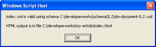
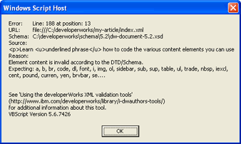
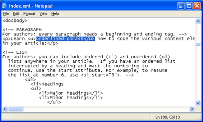
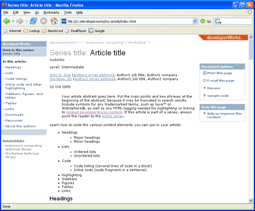
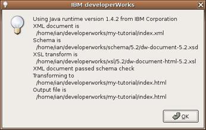
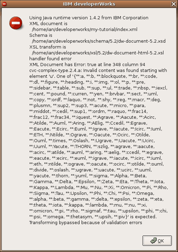
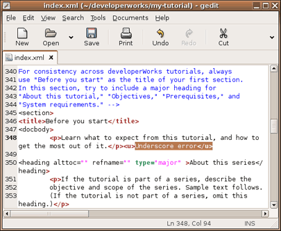
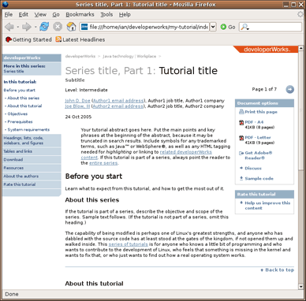

| Level: Introductory Ian Shields (ishields@us.ibm.com), Senior Programmer, IBM developerWorks
28 Jul 2005
Updated 24 Oct 2005 If you can't find a validating XML editor you like, or prefer not to take the time now to learn how to use one, you can edit the XML for your developerWorks articles and tutorials using your preferred text editor. Ian Shields has created some great tools to help you validate, transform, and preview your article or tutorial. This article shows you how easy it is to use those tools on Microsoft® Windows® or Linux®. Getting started Creating an article or tutorial for publication on developerWorks involves these steps:
- Download the author package and unzip the file.
- Copy the XML template for articles or the XML template for tutorials.
- Edit the XML template to add your content,
then validate that XML against the schema and correct any errors.
- Preview your article or tutorial in a browser
to get an idea of how it will appear on developerWorks.
Start by reading and completing Step 1 and Step 2 in the article,
"Authoring
with the developerWorks XML templates." That article shows
you how to download the author package that contains the tools and all
files you'll need. It also includes tips for composing and submitting your content. Then return to this article after you have completed Step 1 and Step 2.
You will have downloaded the author package, unzipped the contents to
your machine, and created a copy of the template using the new-tutorial
or new-article tools described in that article. You are now ready to do the
remaining steps: edit, validate, and preview your content using the
instructions below.
Using Microsoft Windows You will need:
- A text editor or word processor that can
save in plain text format. Although not necessary,
you will find it convenient to have an editor
that can display line numbers, because any errors
detected in the validation phase will be reported by
line number. The Notepad application on Windows XP
will display line numbers if you select the
View > Status Bar menu option. Note
that this option is not available in Notepad
in earlier versions of Windows.
- The latest version of Microsoft's XML
Parser (MSXML), which is contained in MSXML
4.0 Service Pack 2 (Microsoft XML Core
Services) at this writing. (To get the
parser, see the Resources section of
this article for a link.) Use the link to msxml.msi
to install MSXML 4.0 SP2 and the SDK on your
computer. You may also save msxml.msi to your
local disk for later installation.
- Internet Explorer Version 6 or another Web browser
such as Mozilla, Firefox, or Opera.
Step 1. Edit
the XML file Navigate to your new folder and edit your file
(index.xml)
using your favorite text editor. Notepad will suffice if
you don't have another preferred editor. Follow the detailed
comments in the index.xml template file.
They will help you understand what you need to do.
Be sure to save your file
as plain text if you are using a word processor.
Similarly, if you cut and paste from a file with
embedded formatting, such as a Microsoft Word
file, either use your editor's capabilities to paste
(or paste special) as text, or be sure to save your
XML file as plain text. Do not change
the file name from index.xml, and do not edit the
HTML file (index.html) that you may generate using our tools
as your developerWorks editor will work from the XML version.
Save any images, such as photos or
screen shots, in the directory you created for
your article or tutorial (my-article in our example). Step 2. Validate
the XML When editing your article or tutorial, you will need to validate the changes
against our schema. If you are new to XML, we suggest
validating your file as you go along. It will help you identify the
errors more easily.
A tool for validating your XML was installed in your project directory when you created
your new article or tutorial.
Click the dw-transform.vbs script in
your article or tutorial directory. Depending on your Windows settings,
this may simply show as dw-transform.
You should see a window like Figure 1.
Figure 1. Validating your article
with the dw-transform script

Step 3. Correct
validation problems If you happened to make an XML coding error, you
will see an error output instead. Using the dw-transform script,
you should see a window like Figure 2.
Figure 2. An invalid article (VB script checker)

In this case, we introduced a deliberate error by including
<u>Underlined
phrase</u>. Because links are underlined, we do
not use underlined text for other purposes in developerWorks articles or tutorials,
so.the <u> and </u> tags are not permitted by the
schema. The tool will identify the location of the first
error and give a reason for it. The reasons are generated by
the MSXML parser. Although they are somewhat cryptic, they
will usually help you locate the problem.
If the reason contains Expecting a, b, br, ... with a long
list of other tag names, you've probably mistyped a tag name or
attempted to use a tag that isn't supported by the developerWorks
schema (as in our example here). An editor that displays line
numbers will help you find errors quickly. See Figure 3.
Figure 3. Locating an error in your
XML with Notepad

After you have located and corrected your error, save the
file and recheck it. If you used dw-xmlcheck.html, click the reload
button in IE to recheck. If you used dw-transform.vbs, simply run it
again.
Repeat this process until you have no more errors. Step 4. Preview
your article or tutorial When you have no errors, you are ready to see a preview of how
your article or tutorial will look on developerWorks.You should have a file
called index.html in your directory.
Open this file with your preferred browser to preview your content.
If you are using Internet Explorer with Windows XP
Service Pack 2, you may see a popup and an information bar advising that
Internet Explorer has restricted the file from showing active content.
Click on the information bar and select Allow blocked content...
in order to preview your article or tutorial.
Figure 4. Previewing your
article

Notes: - Some of the stylesheets are included by the server, so the formatting in your
preview won't appear exactly as it will when generated by the developerWorks
staff and published on the server.
- The final published version of a tutorial will be several separate pages, but the
preview shows the tutorial on a single page. On this single page, you can see
where each new section begins. However, cross-links in the left navigation area
and body of the tutorial do not work in the preview. The developerWorks staff will
correct the pagination and linking.
Next steps Congratulations! You've edited, validated, and previewed your article or tutorial.
Now, return to "Authoring
with the developerWorks XML templates" for tips on finishing and submitting your
content to your developerWorks editor.
Using Linux or another operating system You will need:
- A text editor or word processor that can
save in plain text format. Although not necessary,
you will find it convenient to have an editor
that can display line numbers, because any errors
detected in the validation phase will be reported by
line number. Many Linux and UNIX® editors
(including
vi and
emacs) will display
line numbers, either always or as a user option.
- A Java runtime or development kit, at 1.4 level or greater.
We recommend using the IBM Runtime Environment for Java 2
(JRE) as it includes the necessary Xalan and Xerces functions
and can be installed alongside other Java implementations.
See the Resources section of
this article for download links.
If you use another Java runtime or developer kit
you may also need the Apache Xalan Version 2.6 package
(which includes the required Xerces funcitons)
if it is not included with your Java version. You may also
need to modify the developerworks/tools/dwxmlxslt.sh script
or set a CLASSPATH environment variable.
- A graphical browser such as Mozilla, Firefox, or Opera.
Step 1. Edit
your XML file Navigate to your new folder and edit your XML file
using your favorite text editor. Follow the detailed
comments in the index.xml file. Be sure to save your file
as plain text if you are using a word processor. Do not change
the file name from index.xml. Save any images, such as photos or
screen shots, in the directory you created for
your article or tutorial (my-tutorial in our example). Step 2. Validate
your XML When editing your article or tutorial, you will need to validate the changes
against our schema. If you are new to XML, we suggest
validating your file as you go along. It will help you identify the
errors more easily. The tool for validating your article or tutorial was installed in your
directory when you created your new article or new tutorial.
Run the dw-transform.sh script in
your directory.
If you are running the KDE or GNOME desktops, you may run this
from a graphical manager, such as Nautilus or Konqueror; otherwise,
you should run the script in a terminal window.
After a few moments, you should see a message box like Figure 5
if all is well.
Figure 5. Validating your tutorial
with the dw-transform shell script

Step 3. Correct
validation problems If you happened to make an XML coding error, your
message box will show an error similar to Figure 6.
Figure 6. An invalid tutorial (shell script checker)

In this case, we introduced a deliberate error by including
<u>Underscore error</u>.
Because links are underlined, we do not use underlined text
for other purposes in developerWorks articles or tutorials,
so the <u> and
</u> tags are not permitted by the
schema. The tool will identify the location of the first
error and give a reason for it. The reasons are generated by
the Java parser. Although they are somewhat cryptic, they
will usually help you locate the problem.
If the reason contains One of '{"" with a long
list of other tag names, you've probably mistyped a tag name or
attempted to use a tag that isn't supported by the developerWorks
schema (as in our example here). An editor that displays line
numbers will help you find errors quickly. See Figure 7.
Figure 7. Locating an error in your
tutorial with the gedit editor

After you have located and corrected your error, save the
file and rerun the dw-transform.sh script to recheck your file.
Repeat this process until you have no more errors. Notes: - Some errors, such as a legitimate opening tag without
a matching closing tag, may result in an error without a line
number. Validate often.
- If you use tabs to indent your article or tutorial, the column number
shown in your editor may not match the column number reported
in an error message.
Step 4. Preview
your article or tutorial When you have no more errors, you are ready to see a preview
of how your article or tutorial will look on developerWorks. You should have a
file called index.html in your
directory. Open this file with your preferred browser to preview
your article or tutorial.
Figure 8. Previewing your
tutorial

Notes: - Some of the stylesheets are included by the server and so the
formatting in your preview won't appear exactly as it will
when generated by the developerWorks staff and published on the server.
- You may use the left navigation area to navigate between and within
sections of you tutorial as the Linux transformation tool produces several
html pages similar to those that will be in the final version.
Next steps Congratulations! You've edited, validated, and previewed your article or tutorial.
Now, return to "Authoring
with the developerWorks XML templates" for tips on finishing and submitting your
content to your developerWorks editor.
Resources Learn
Get products and technologies
- Microsoft's
XML Parser (MSXML): To use the dw-transform.vbs script to transform your article
or tutorial, you need the latest version of the MSXML parser. The file you need is msxml.ms.i.
- IBM Developer Kit for Java,
Version 1.4.2: To use the dw-transform.sh script on Linux to transform your article or
tutorial, you need the IBM Developer Kit for Java, Version 1.4.2 or later.
- Apache Xalan: If
you are using the Linux tools (dw-transform.sh) and not using the IBM
Developer Kit for Java, you may need Apache Xalan.
- IBM trial
products for download: Build your next development project with IBM trial
software, available for download directly from developerWorks.
Discuss
About the author | 
| Ian Shields works on a multitude of Linux projects for the developerWorks Linux zone.
He is a Senior Programmer at IBM at the Research Triangle Park, NC. He joined IBM in
Canberra, Australia, as a Systems Engineer in 1973, and has since worked on
communications systems and pervasive computing in Montreal, Canada,
and RTP, NC. He has several patents. His undergraduate degree is in
pure mathematics and philosophy from the Australian National University.
He has an M.S. and Ph.D. in computer science from North Carolina State University. |
Rate this page
| |